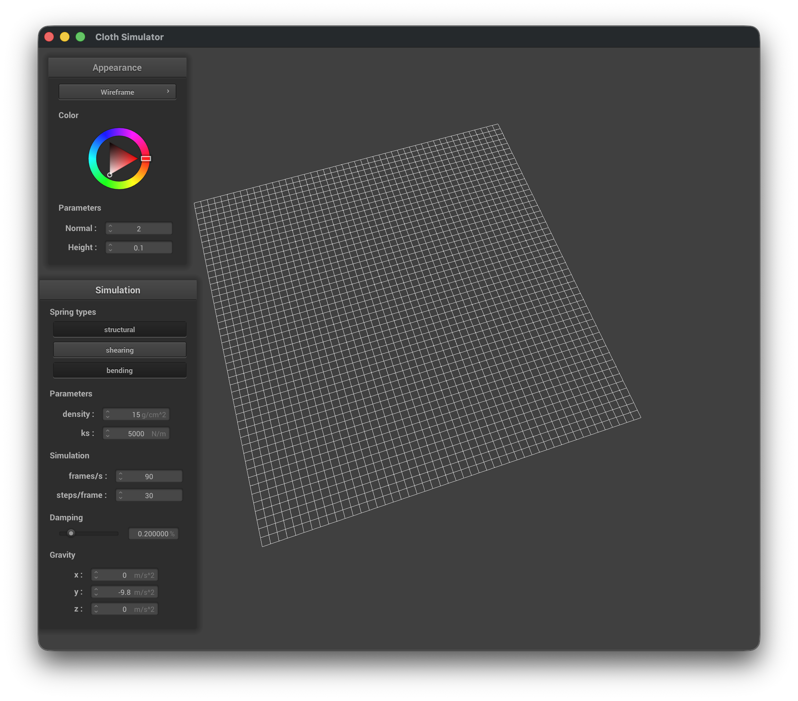
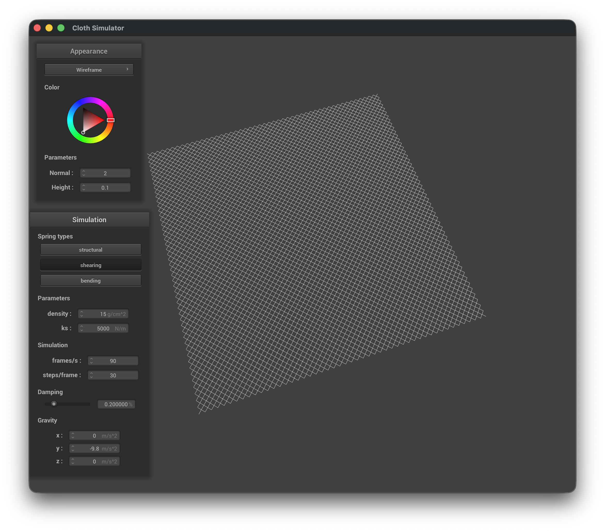
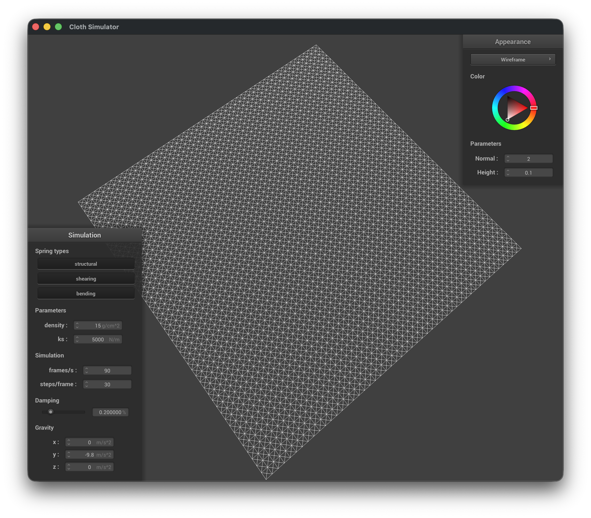
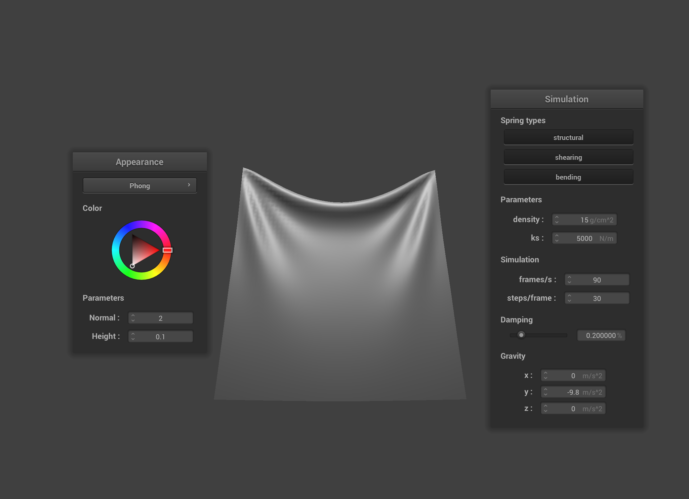
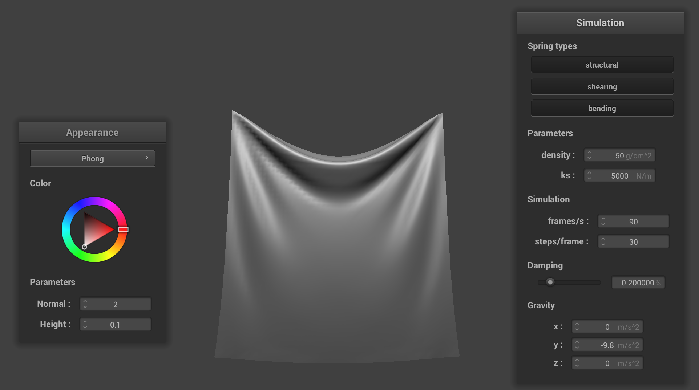
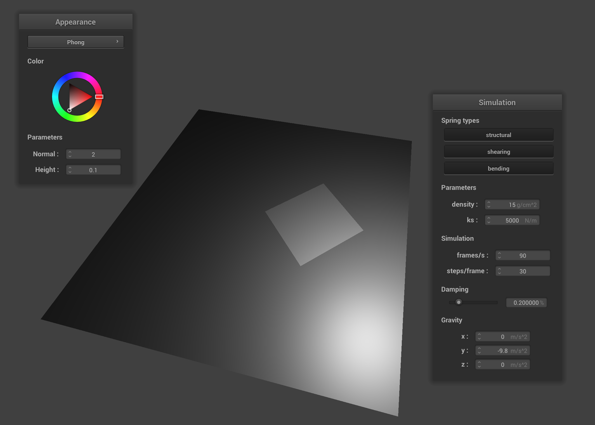

CS 184/284A, Fall 2026
Homework 4: Cloth Simulation
MD Aeinul Islam
Overview
I built the cloth as a grid of point masses connected by springs. I used damped Verlet integration to move the free masses under gravity and spring forces. I then added contact with a sphere and a plane so the cloth could interact with objects in the scene.
Part 1: Masses and Springs
In Cloth::buildGrid, I filled the grid one row at a time. For a grid with N columns and M rows, column i and row j give the index jN + i. I spaced the columns by Δx = W / (N − 1) and the rows by Δy = H / (M − 1), where W and H are the cloth dimensions. If an axis had only one point, I used zero spacing on that axis.
For horizontal cloth, I put the masses at (iΔx, 1, jΔy). For vertical cloth, I used (iΔx, jΔy, z) with a small pseudorandom depth between −0.001 and 0.001. I marked a mass as pinned when its grid coordinates matched a pair in the scene’s pin list.
I finished the mass vector before storing any pointers to its elements. At each grid point, I connected structural springs to the immediate left and above, shearing springs to the upper left and upper right, and bending springs to points two columns left and two rows above. I checked each neighbor against the grid bounds. These offsets visit each pair once, and each spring stores the initial distance between its endpoints as its rest length.
The recorded 52 sanitizer cases checked layout, pins, spring types and counts, endpoints, and boundaries. The 50 × 50 grid had 2,500 masses, 4,900 structural springs, 4,802 shearing springs, and 4,800 bending springs.
I compared the flat cloth in pinned2.json using three spring configurations. The spring-type controls select which stored springs are drawn in the wireframe views.



Part 2: Numerical Integration
I gave each point mass the same mass, m = ρWH / (NM). At the start of a substep, I replaced its force accumulator with the sum of ma for all external accelerations. Then I added the forces from enabled springs. For a spring from a to b of length ℓ and rest length ℓ0, the force on a is k(ℓ − ℓ0) times the unit direction from a to b. I added the opposite force to b. I used k = 0.2ks for bending and k = ks for the other springs. When the endpoints coincide, I skip the force because the direction is undefined.
For each free mass, I used the last two positions and the current net force to calculate the next position.
xnext = x + (1 − d)(x − xprev) + (F / m)Δt2
I converted the damping percentage to d by dividing it by 100. I used Δt = 1 / (frames per second × substeps per frame), saved the old current position, and then assigned the new one. I skipped pinned masses in the position update.
I used one Provot stretch pass over all springs. If a spring was longer than 1.1ℓ0, I moved its free endpoints toward each other by the excess length in total. Two free endpoints shared the correction equally. If one endpoint was pinned, the other took the full correction. Two pinned endpoints stayed fixed. A later correction can move an endpoint shared by a spring I already checked, so one pass does not guarantee the bound everywhere at the end of the substep.
The earlier implementation checks passed 24 targeted cases and reproduced 52 grid cases. A headless run using the pinned2.json parameters took 1,200 substeps. The two pins stayed fixed, the free corner moved downward, and the positions and forces remained finite.
Spring stiffness
I used the two pinned corners in pinned2.json to compare the cloth shapes. The baseline below uses ks = 5,000 N/m, GUI density 15 g/cm², and damping 0.2%. The captures have no recorded elapsed times, so I compare their visible folds without treating them as synchronized frames.

At the initial flat shape, gravity starts the free masses moving downward. As the springs deform, a larger ks produces a stronger restoring force for the same extension. The 500 N/m capture has deeper folds along the upper edge, while the 50,000 N/m capture has a shallower dip and a smoother center. These shapes are consistent with softer cloth deforming more under its weight as it moves toward rest. The stretch correction also limits elongation in both cases.


Density
I increased the GUI density from 15 to 50 g/cm² while keeping ks = 5,000 N/m and damping at 0.2%. The GUI divides the internal density parameter by 10, so these settings correspond to internal values of 150 and 500. Increasing density increases each mass and its weight. Gravity still contributes the same acceleration, but the spring acceleration for a given deformation becomes smaller because it is divided by a larger mass. This lets the cloth deform further before spring forces balance its weight.
Compared with the baseline, the density-50 capture shows a deeper upper fold and stronger diagonal folds near the pinned corners. This resembles the softer-spring case because both changes reduce spring resistance relative to the cloth's weight.

Damping
I compared the baseline's 0.2% damping with 1.0%. In the Verlet update, these settings multiply the previous displacement by 0.998 and 0.99 per substep. Increasing damping removes more of the carried-over motion, suppressing swinging and oscillation as the cloth approaches rest. Once the masses stop moving, that displacement term vanishes.
The 1.0% capture has a broad, smooth center and fewer pronounced upper folds than the baseline. A still image cannot establish how quickly the motion decayed, so this shape illustrates the higher-damping setting without providing a measured settling time.

Four pinned corners
In the resting view of pinned4.json, the four fixed corners support a smooth, bowl-shaped surface. The center sags under gravity while the corners remain at their initial positions.

pinned4.json, ks = 5,000 N/m, GUI density 15 g/cm², damping 0.2%, shown with Phong shading.Part 3: Sphere and Plane Collisions
For a sphere, I checked whether the current point lay on or inside the collision radius. I found its surface target by normalizing the direction from the center to the point and scaling by the radius. At the exact center I used the previous position to choose the direction, with positive x as a fallback if both positions were at the center.
For a plane, I took the signed distances sprev and snow from the previous and current positions. Opposite signs indicate a crossing. I found the intersection on the motion segment at u = sprev / (sprev − snow) and moved the target by SURFACE_OFFSET = 0.0001 along the unit normal toward the starting side. If a mass starts exactly on the plane and moves into the negative half-space, the intersection is its previous position and I offset the target along the positive normal.
For either object, I took the displacement from the previous position to the target and applied a fraction of that displacement. With friction set to 0, the mass reaches the target. With friction set to 1, it stays at its previous position. Intermediate values reduce the motion toward the target.
xcorrected = xprev + (1 − friction)(xtarget − xprev)
In Cloth::simulate, I tested each free mass against the scene objects after Verlet integration and before the stretch pass.
I tested the boundary case at friction values of 0, 0.5, and 1. In headless runs of 8,100 substeps each, no masses were below the floor after plane contact or after the stretch pass in plane.json or either selfCollision.json run. One self-collision run used the scene thickness and the other used zero thickness for comparison. In the separate default sphere run, the deepest sampled penetration was 0.000111785 scene units.
These position corrections run once per substep. The sphere check uses the current point position, and the plane check uses the previous and current positions to identify a crossing. Later stretch corrections can move masses again, so contact remains approximate.
Cloth on the sphere
I compared the resting views of sphere.json at three stiffness settings. Each capture shows Phong shading, GUI density 15 g/cm², and damping 0.2%. The scene uses sphere friction 0.3. The capture times were not recorded, so the comparison focuses on the visible drape and folds.


A larger spring constant produces a stronger restoring force for the same extension. It also increases bending stiffness because bending springs use 0.2ks. The softer capture wraps closely around the sphere with fine folds, while the stiffer captures have broader folds and retain more shape away from the surface. The images illustrate this change in drape, but they do not provide a measurement of spring elongation.
Cloth on the plane
In plane.json, the plane passes through the origin with normal (0, 1, 0), so its surface is at y = 0. The resting view shows the cloth as a flat square supported by that surface. The plane friction is 0.5, which applies half of the displacement from the previous position to the contact target during a crossing correction.

plane.json, ks = 5,000 N/m, GUI density 15 g/cm², damping 0.2%, shown with Phong shading.Part 4: Self-Collisions
Implementation is complete. Report explanation and visual evidence are pending. Cover spatial hashing, map construction, and collision correction. Include at least three figures showing the fall and folds, plus density and stiffness comparisons.
Part 5: Shaders
Pending implementation and evidence. Explain what a shader does and the roles of vertex and fragment shaders. Include the ambient, diffuse, and specular Blinn–Phong terms separately and combined, a custom texture, bump mapping on cloth and sphere, displacement on the sphere, a comparison of bump and displacement, 16 × 16 and 128 × 128 sphere meshes, and mirror shading on the cloth and sphere.
Extra Credit
Reserved for completed extra credit.
References
- UC Berkeley CS 184/284A, Fall 2026. Homework 4 assignment and Cloth Simulator starter code.
- Xavier Provot, 1995. Deformation Constraints in a Mass-Spring Model to Describe Rigid Cloth Behaviour.
LLM Acknowledgment
Incomplete. Student statement pending.